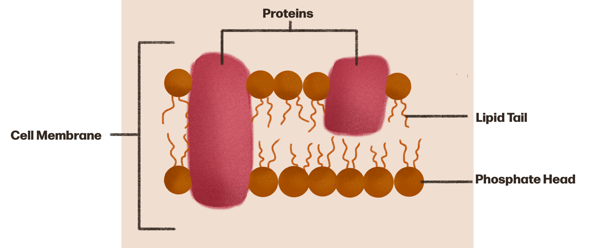
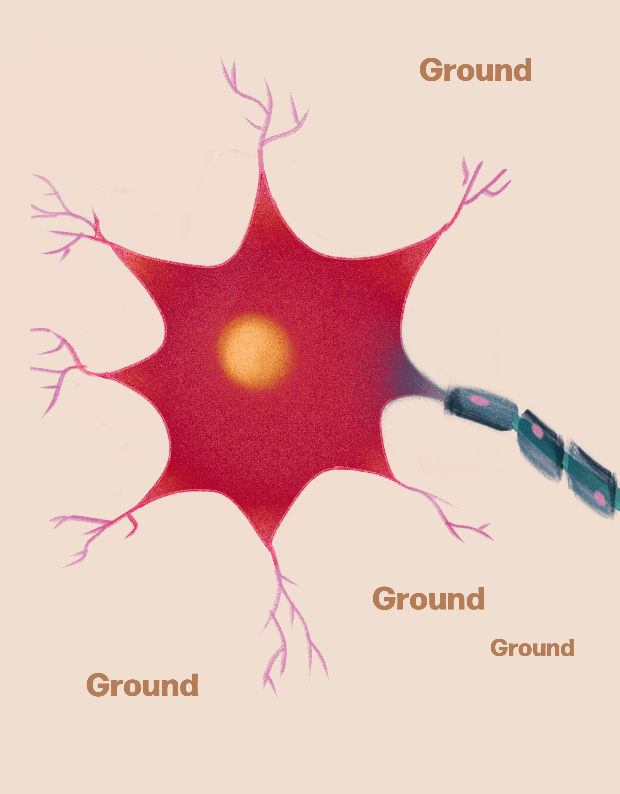

The Cell
Membrane
The cell membrane is hella cool because it's basically the bouncer of the cell
What does it even look like?
Okay so, the cell membrane is made up of two rows of these wiggly looking guys called phospholipids.
These dudes can be divided into two sections: their phosphate head, and their lipid tail. Their tails are just wiggle and move about, which is really cool.
It's pretty common to find random proteins just wedged into various parts of the membrane. These proteins carry out a bunch of different functions, some of which, we'll cover in the next lesson.

Potential energy
As a whole, we are electrically neutral, with equal amounts of positive and negative charges floating around. But certain areas (like neurons) are more positively or negatively charged than others.
Because opposite charges attract, we need barriers, or membranes, to keep positive and negative charges separate until we’re ready to use the energy that their attraction creates. This is called potential energy.
Voltage across cell membranes
Voltage is a relative measurement, and neuroscientists always use the outside of the cell as the ‘ground’ or reference point to measure the voltage across the membrane. For example, if the inside of the cell is 70 mV more negative compared to the outside of the cell, we would report the voltage as –70 mV.
Membrane potential: this is a general term that describes the the difference in electrical charge between the inside and outside of a neuron at any point in time. It could be recieving info, firing an impulse along it’s axon, deploying neurotransmitters, or doing none of those things! It’s whatevs. the membrane potential of a neuron can vary widely, for example from -90 mV to +60 mV

-90 milivolts
-70 to -60 milivolts

+60 milivolts
Resting potential: the membrane potential of a neuron that is specifically "at rest," meaning that it is not sending or receiving signals, generally stays between -60 mV and -70 mV